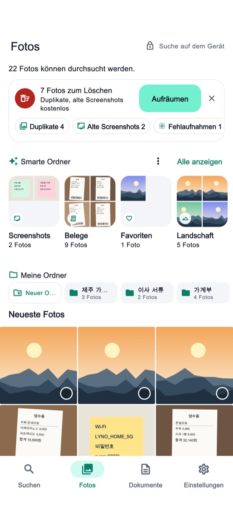
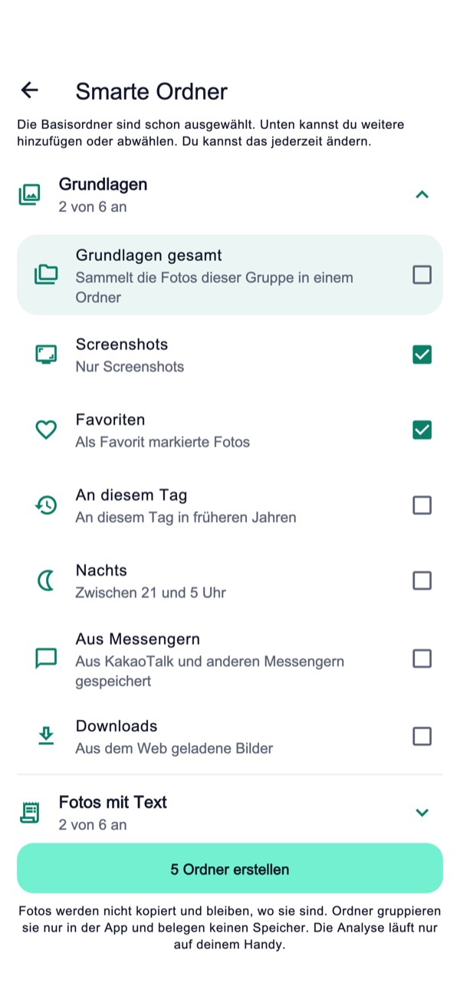

Smarte Ordner nutzen
1. Was sind smarte Ordner?
LYNO Find sortiert deine Fotos selbst in Ordner. Neue Fotos landen automatisch im passenden Ordner.

2. Welche Ordner gibt es?
Von Anfang an: Screenshots, Selfies, Favoriten, Nach Ort, Reisen, Belege, Notizen, Essen, Haustiere
Zum Einschalten: 38 Ordner in 8 Gruppen: Grundlagen, Orte & Reisen, Fotos mit Text, Menschen & Tiere, Anlässe, Hobbys & Sport, Dinge & Essen, Natur & Landschaft
3. Wie nutze ich sie?
1. Tippe unten auf den Tab Fotos.
2. Tippe bei Smarte Ordner auf „Alle anzeigen“, um die Ordner zu öffnen.
3. Unter „Ordner wählen“ öffnest du eine Gruppe und schaltest Ordner ein oder aus.
4. Schalte die erste Zeile einer Gruppe ein, etwa „Hobbys & Sport gesamt“, um die ganze Gruppe in einem Ordner zu sammeln.

4. Nichts wird verschoben
Fotos werden nie kopiert oder verschoben. Die Originale bleiben, wo sie sind; Ordner sammeln sie nur zum Anzeigen. Sortiert wird nur auf deinem Handy.